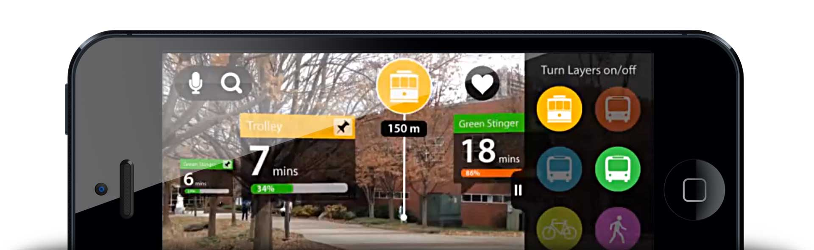
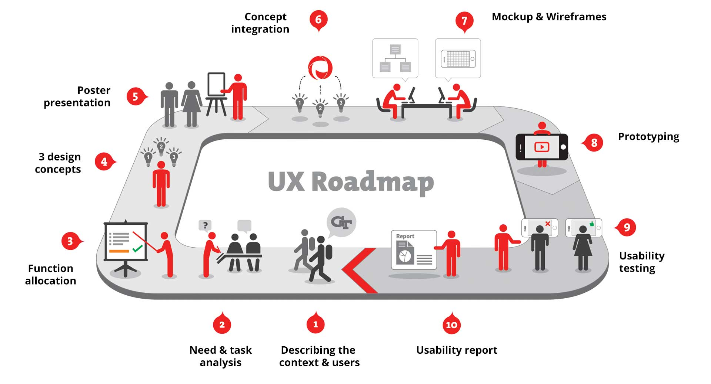

Peerspot
Augmented Reality iPad App for in-campus transit

About
There are so many ways to travel inside the Georgia Tech campus. However, there is no unified system that tracks all of them. How does a person decide what mode of transit to take?
Objective
Team Peerspun decided to understand the current problems of in-campus transit and propose a solution that aids in the decision making process of students in the Georgia Tech campus.

The UX process for the project
Users & Context
What we found out
Almost half of our participants said that they got delayed for classes because of slow trolleys. Majority had never heard of ViaCycle - a free cycle service in the campus.
What we planned to do
We tried to conceptualize a system that suggests the quick and efficient mode of transportation between walking, bikes and buses on the campus in real time.
Concepts
Concepts
After a few informed brainstorming sessions to develop as many divergent ideas as possible, we narrowed down to 3 concepts - a tangible cap, a bus stop installation and an AR app for the smartphone.
Feedback
We presented our ideas at various demos. Our final choices were amalgamations comprised of the most interesting and diverse qualities from many of these basic concepts.
Mockups and Wireframes
Final Design
Evaluation
Participants were asked to use the prototype and think-aloud through a few bench mark tasks. After the cognitive walkthrough, they were a series of qualitative questions regarding the prototype system's interface and functionality.
Findings
The overall impression was positive. Users commented on the novelty of the AR view and the ability to identify locations of real vehicles and places as well as occupancy and availability. Most thought that the system would be especially useful to users who were new to the campus.